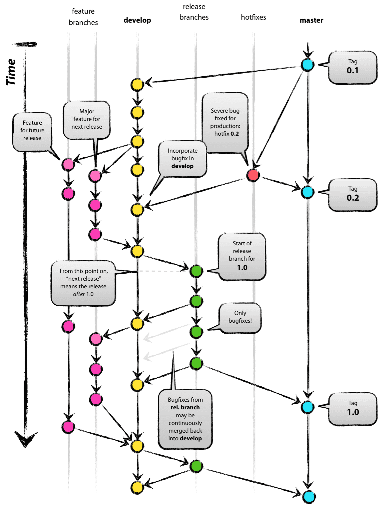

6.1.6.1. GitHub에서 OpenFAST 작업
OpenFAST에 대한 대부분의 협업 및 개발은 다음과 같은 환경에서 이루어집니다. GitHub 저장소. 거기, 문제 및 풀 요청 가 논의되고 새 버전이 출시됩니다. 이는 NLR OpenFAST 팀 및 OpenFAST 커뮤니티 전체의 다른 개발자와 협력하기 위한 최고의 메커니즘입니다.
6.1.6.1.1. 문제 및 업무 할당
문제 또는 기능 격차를 완전히 설명하려면 적절한 문서와 데이터를 사용하여 문제를 열어야 합니다. 새로운 개발을 위해 진행 중인 작업과 관련하여 의사소통과 조정이 이루어져야 하며, 개발자는 작업을 완료하려는 의도를 분명히 해야 합니다.
6.1.6.1.2. 풀 요청
코드 수정을 검토할 준비가 되면 모든 적절한 문서 및 테스트와 함께 풀 요청을 제출해야 합니다. NLR OpenFAST 팀 구성원은 검토자를 할당하고 개발자와 협력하여 코드를 기본 저장소에 병합합니다.
새 풀 요청에는 다음이 포함되어야 합니다.
수정 필요성에 대한 설명
풀 요청으로 버그가 수정되면 동반된 GitHub 문제를 참조해야 합니다.
구현된 작업 요약
회귀 테스트 결과
모든 테스트가 통과되면 요약 인쇄물이 제공되어야 합니다.
테스트가 실패할 경우 실패한 사례에 대한 설명과 플롯과 같은 지원 데이터가 포함되어야 합니다.
업데이트된 단위 테스트(해당되는 경우)
컴파일 및 배포 준비가 완료된 해당 섹션의 문서를 업데이트했습니다. 문서 읽기.
6.1.6.1.3. Git 워크플로 및 기본 저장소와 상호 작용
OpenFAST 개발은 github 저장소와 상호 작용할 때 "Git Flow"를 따라야 합니다. Git Flow는 공유 저장소에 커밋을 푸시하고 풀하는 안전한 방법을 설명하는 git 사용을 위해 잘 정의되고 널리 채택되는 워크플로입니다. 원격 변경으로 인해 로컬 개발이 차단되는 것을 방지하려면 Git 흐름을 유지하는 것이 중요합니다. 이 작업 흐름은 훌륭하게 자세히 설명되어 있습니다. 여기 및 아래 차트는 높은 수준의 관점을 제공합니다.


6.1.6.1.4. OpenFAST 특정 Git 흐름
현재 작업이 다른 개발자의 커밋에 의해 어떻게 영향을 받을지, 그리고 커밋이 다른 개발자에게 어떤 영향을 미칠지 고려하는 것이 중요합니다. 공공 지점에서는 사용하지 마십시오. 자식 리베이스 그리고 결코 강제 푸시.
OpenFAST 개발에서 일반적인 작업 흐름은 다음 절차를 따릅니다.
GitHub에서 OpenFAST 저장소를 포크합니다.
새 포크를 복제하세요
git clone https://github.com/<youruser>/OpenFAST
OpenFAST/OpenFAST를 이름이 지정된 원격으로 추가
upstream
# This adds the remote
git remote add upstream https://github.com/OpenFAST/OpenFAST
# This downloads all the info in the remote, but it doesnt change
# the local source code
git fetch --all
OpenFAST에서 시작하여 활성 개발을 위한 기능 브랜치를 생성합니다.
dev브랜치를 확인해보세요
git branch feature/a_great_feature upstream/dev
git checkout feature/a_great_feature
에 새로운 개발 추가
feature/a_great_feature
git add a_file.f90
git commit -m "A message"
git push origin feature/a_great_feature
다음으로 기능 분기를 업데이트하세요.
upstream
git pull upstream dev
git push origin feature/a_great_feature
새로 열기 풀 요청 병합
<youruser>/OpenFAST/feature/a_great_feature안으로OpenFAST/OpenFAST/dev